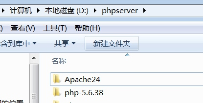

第一章:环境配置
一.集成环境PHPStudy下载与安装
- 下载phpstudy安装包:http://phpstudy.net下载20161103版本
- 安装前必须安装:vc++9 vc++11
- 我们安装到D:\PHPStudy目录
-
打开PHPStudy,启动服务....
4.1 如果服务不能启动:1.检测防火墙 2.查看端口是否被占用 3.重新安装,安装时关掉相关杀毒软件与安全卫士.5.重复第二步:检测VC++运行库,最好是9-15各版本32位与64位全安装一遍.
MSSQL:1433 端口
apache:80 端口
mysql:3306 端口
-- 查看本机端口使用情况
netstat -ano
-- 单独查看某个端口是否已打开(开启WINDOWS的TELNET客户端功能,在控制面板-->程序-->打开或关闭WINDOWS功能)
telnet IP 端口
二.手动安装Apache与PHP配置
-
下载apache与php
下载apache
http://www.apachehaus.com/cgi-bin/download.plx
下载PHP:注意线程安全版本(Thread Safe)可以用第4步方法用模块配置,如果是NTS版本,则须用第5步的方法来配置
http://windows.php.net/download#php-5.6
-
把apache与php统一解压到D:\phpserver\下面.
 -
配置与安装Apache
去Apache目录下拿记事本打开:D:\phpserver\Apache24\conf\httd.conf 找到 Define SRVROOT "/Apache24"改成Define SRVROOT "D:/phpserver/Apache24"
安装Apache:以管理员身份启动DOS,进入到D:\phpserver\Apache24\bin目录,输入:httpd -k install (由于我安装了多次,为了服务名不重复 用了 -n 服务名参数) 等待安装完成.如果报错,重装.提示“The 'Apache2.4' service is successfully installed.”，说明安装成功
检查Apache是否安装成功:我的电脑右键-->管理-->服务与应用程序-->服务--找找有没有apache2.4这个服务(在DOS下输入services.msc)

把Apache2.4改成手动启动... (net start apache2.4 停止:net stop apache2.4)
卸载apache (DOS管理员 --> sc delete apache2.4 注意:删除前必须先停止服务) -
让APACHE支持PHP(PHP的常用配置), 以mod模式开启Apache服务----添加php支持（php必须为ts版）
让 Apache 加载 PHP模块，打开 D:\phpserver\Apache24\conf\httpd.conf，在文件末尾增加
PHPIniDir "D:\phpserver\php5.6.31x64" LoadModule php5_module "D:\phpserver\php5.6.31x64\php5apache2_4.dll" <IfModule php5_module> AddType application/x-httpd-php .php AddType application/x-httpd-php .php3 AddType application/x-httpd-php .php5 </IfModule> -
配置FCGI 记Apache支持PHP(推荐这种配置方法),这种方法与方法(4. 让APACHE支持PHP(PHP的常用配置), 以mod模式开启Apache服务----添加php支持（php必须为ts版）)二选一就行.没必要两种都配置
5.1 进入
https://www.apachehaus.com/cgi-bin/download.plx下载apache 2.4 modules 如下图

5.2 我下载的是VC14的FCGI模块,下载地址 https://www.apachehaus.com/cgi-bin/download.plx#MODULES24VC14
5.3 解压下载的FCEG模块(mod_fcgid-2.3.9a-2.4.x-x64-vc14.zip),把里面的Apache24覆盖到Apache目录.5.4 配置Apache2.4的配置文件 conf/httpd.conf
# ############################################### # 在第183行:就是模块加载的末尾处增加一行配置 LoadModule fcgid_module modules/mod_fcgid.so # 在第536行处:就是配置文件加载和末尾处增加一行配置 Include conf/extra/httpd-fcgid.conf # ###############################################5.5 配置 conf/extra/httpd-fcgid.conf 文件,可直接替换,注意里面修改的三处地方
# ########################################################### # Configuration for mod_fcgid # FileName: conf/extras/mod_fcgid_php.conf <IfModule fcgid_module> # Fast CGI module Settings (PHP 5.3, 5.4) # 下面两行修改为PHP的所在路径 FcgidInitialEnv PHPRC "D:\\phpserver\\php-5.6.38-nts" FcgidInitialEnv PATH "D:\\phpserver\\php-5.6.38-nts;C:\\WINDOWS\\system32;C:\\WINDOWS;C:\\WINDOWS\\System32\\Wbem;" FcgidInitialEnv SystemRoot "C:\\Windows" FcgidInitialEnv SystemDrive "C:" FcgidInitialEnv TEMP "C:\\WINDOWS\\TEMP" FcgidInitialEnv TMP "C:\\WINDOWS\\TEMP" FcgidInitialEnv windir "C:\\WINDOWS" # Global mod_fcgid settings FcgidIOTimeout 40 FcgidConnectTimeout 10 FcgidMaxProcesses 8 FcgidOutputBufferSize 64 ProcessLifeTime 240 FcgidMaxRequestsPerProcess 500 FcgidMinProcessesPerClass 0 # Global Config Example # Comment out next 4 lines to use per-Directory or per-VirtualHost configuration <Files ~ "\.php$"> Options ExecCGI AddHandler fcgid-script .php # FcgidWrapper "C:/php/php-cgi.exe" .php # 注释上面一行,下行改成php-cgi.exe所在的路径 FcgidWrapper "D:/phpserver/php-5.6.38-nts/php-cgi.exe" .php </Files> </IfModule> # ############################################################ -
PHP的基本配置与常用功能开启
打开 PHP 目录(D:\phpserver\php5.6.31x64)，复制 php.ini-development 文件，重命名为 php.ini 并打开，配置 PHP 扩展，去除下面几个常用扩展前面的分号“;”
# 时区设置 常用的值有三个 (PRC 或 Asia/Shanghai 或 Asia/Chongqing) ;date.timezone = 改成 date.timezone = PRC # 扩展目录指定 ;extension_dir = "ext" 改成 extension_dir = "D:\phpserver\php5.6.31x64\ext" #下面的都是打开常用扩展, 去掉注释就行了(行首分号) ;extension=php_curl.dll 改成 extension=php_curl.dll ;extension=php_gd2.dll 改成 extension=php_gd2.dll ;extension=php_mbstring.dll 改成 extension=php_mbstring.dll ;extension=php_mysql.dll 改成 extension=php_mysql.dll ;extension=php_mysqli.dll 改成 extension=php_mysqli.dll ;extension=php_pdo_mysql.dll 改成 extension=php_pdo_mysql.dll -
所有配置完成了记得重启Apache服务.........
三.IIS安装与PHP环境配置
-
安装IIS(XP下是6.0 win7下是7.5)
开始-->控制面板-->程序-->打开或关闭WINDOWS功能-->钩选internet information services可承载的web核心-->钩选Internet信息服务下面除(FTP服务器以外的)所有功能.

-
在IIS下配置PHP
开始-->控制面板-->管理工具(小图标视图)-->Internet 信息服务(IIS)管理器-->选择左边的根-->处理程序映射-->添加模块映射-->(请求路径:*.php ; 模块:FastCgiModule; 可执行文件:D:\phpStudy\php\php-5.4.45-nts\php-cgi.exe;名称:PHP)注:IIS配置PHP要求PHP是NTS(线程非安全)版本.


-
重启IIS,在C:\inetpub\wwwroot下创建PHP文件测试.
重要:IIS的正常维护与管理
-
把IIS Admin Service服务设为手动启动
服务名称：IISADMIN
显示名称：IIS Admin Service
描述：允许此服务器管理 IIS 元数据库。IIS 元数据库存储 SMTP 和 FTP 服务的配置。如果停止此服务，服务器将无法配置 SMTP 或 FTP。如果禁用此服务，则任何明确依赖于它的服务都将无法启动。 -
把World Wide Web Publishing Service服务设为手动启动
服务名称：W3SVC
显示名称：World Wide Web Publishing Service
描述：通过 Internet 信息服务管理器提供 Web 连接和管理 -
在桌面创建批处理文件对IIS进行启动与停止.
这样改了以后，下次使用时又要再开启需要多点几次鼠标，为了省事，我尝试着写了个开启和关闭服务的脚本，献丑了……互联网+搜索引擎=爱因斯坦 :)
将此文件保存为start_iis.bat即可,后缀名也可以用.cmd@echo off echo 开启IIS Admin Service net start IISADMIN echo 开启World Wide Web Publishing Service net start W3SVC pause将此文件保存为stop_iis.bat即可,后缀名也可以用.cmd
@echo off echo 停止IIS Admin Service net stop IISADMIN echo 停止World Wide Web Publishing Service net stop W3SVC pause